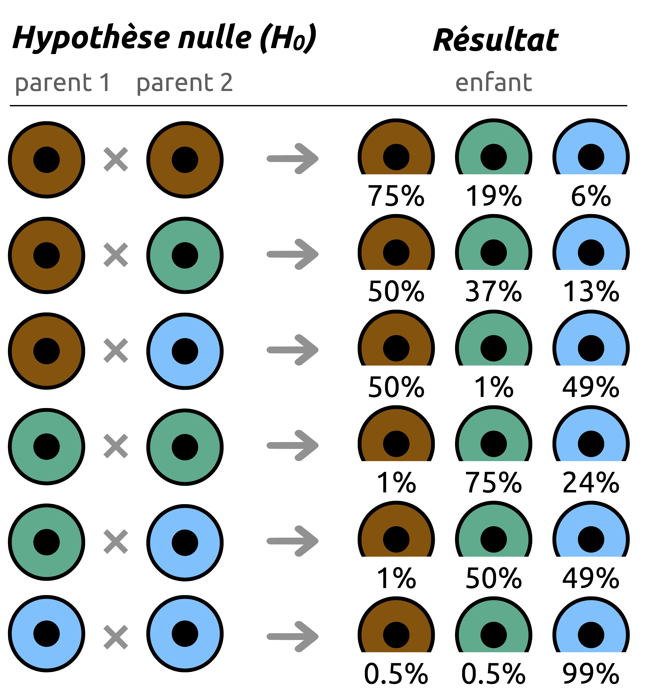

La fameuse « p-value », telle qu'elle est utilisée aujourd'hui, permet simplement de répondre à la question suivante : étant donné nos croyances sur le monde qui nous entoure, le résultat d'une expérience doit-il être considéré comme étant ordinaire ou extraordinaire dans le monde tel que nous croyons qu'il est ?
La p-value — valeur p en français — étant une probabilité (le « p » signifiant probabilité), elle est nécessairement comprise entre 0 et 1 — ou entre 0% et 100%. Par convention, on a décidé que la frontière entre l'ordinaire et l'extraordinaire était le seuil 0.05 (5%) : en supposant que nos croyances sur le monde sont vraies, un résultat qui avait moins de 5% de chances de se produire mais qui s'est tout de même réalisé doit être considéré comme étant extraordinaire. Au contraire, un résultat qui avait plus de 5% de chances de se produire et qui s'est réalisé n'est pas extraordinaire, on pourra dire qu'il est ordinaire (« normal »), c'est-à-dire conforme à ce que l'on croyait savoir sur notre monde.
Un résultat extraordinaire nous oblige à revoir et à remettre en question nos croyances : si elles étaient vraies dans le monde tel que nous le concevions, observer un tel résultat aurait été bien trop improbable. À l'inverse, un résultat ordinaire n'est pas suffisant pour remettre en cause nos croyances : si elles sont vraies dans le monde tel que nous le concevons, observer un tel résultat est possible, pas improbable. Par contre, un résultat ordinaire ne prouve pas que nos croyances initiales sont vraies, il dit juste que nous n'avons pas de bonnes raisons (pas assez de preuves) de les considérer comme fausses.
Une histoire de couleurs des yeux
Avant de parler de p-value, prenons un exemple concret pour illustrer ce que l'on entend par ordinaire et extraordinaire. Un enfant nait avec les yeux verts, ce fait est-il ordinaire ou extraordinaire ? Pour trancher, il nous faut d'abord définir ce qu'est l'ordinaire, c'est-à-dire ce à quoi l'on aurait dû s'attendre. Sans contexte et sans informations supplémentaires, cette question reste sans réponse. En fait, nos croyances jouent ici le rôle de contexte : le fait de savoir (ou de croire) que les parents ont les yeux bruns ou verts change complètement l'interprétation du résultat. Et c'est un point clé : la p-value nécessite toujours un contexte, une croyance initiale. Par convention, on appelle cette croyance l'hypothèse nulle, que l'on note $H_0$.
Pour calculer une p-value, le principe est simple : on se place toujours dans un monde où $H_0$ — notre croyance initiale — est vraie, et l'on se demande : dans ce monde-là, quelle était la probabilité d'observer ce résultat ? Et c'est bien dans ce monde-là que l'on décide si le résultat est ordinaire ou extraordinaire, en considérant la frontière à 5%. C'est ce même résultat qui va décider si notre croyance initiale ($H_0$) tient la route, ou si on doit la revoir. On peut alors envisager plusieurs mondes, plusieurs hypothèses nulles (la couleur des yeux des deux parents) et, en s'appuyant sur les lois de la génétique pour cet exemple, observer dans quels cas, dans quels mondes le résultat (l'enfant a les yeux verts) devient extraordinaire (Figure 1).

Pour un enfant dont les deux parents auraient les yeux verts, la probabilité qu'il ait les yeux verts également est de 75% : rien d'extraordinaire ici (Figure 1). En revanche, si les deux parents ont les yeux bleus, les chances que l'enfant ait les yeux verts tombent à 0,5% : si cela se produisait on parlerait alors d'un résultat extraordinaire. Un enfant de deux parents aux yeux bruns qui naît avec les yeux bleus ? Avec 6% de chances, le résultat est certes peu probable, mais reste ordinaire. On le voit bien : c'est notre croyance ($H_0$) sur la couleur des yeux des parents qui détermine si le résultat est ordinaire ou extraordinaire. Notons $E$, $P_1$ et $P_2$ les variables aléatoires respectivement associées à la couleur des yeux de l'enfant, du parent 1 et du parent 2. Avec les notations usuelles, on peut écrire :
$\mathbb{P}(E=$
 $\mid P_1 = $
et $P_2 = $
$) = 0.75$
$\mid P_1 = $
et $P_2 = $
$) = 0.75$
$\mathbb{P}(E=$
$\mid P_1 = $
 et $P_2 = $
$) = 0.005$
et $P_2 = $
$) = 0.005$
$\mathbb{P}(E=$
$\mid P_1 = $
 et $P_2 = $
$) = 0.06$
et $P_2 = $
$) = 0.06$
À ce stade, plusieurs choses ont peut-être déjà retenu votre attention : oui le seuil de 5% est totalement arbitraire, et quelqu'un qui en choisirait un autre pourrait aboutir à des conclusions différentes. Cette limite sera discutée dans la vignette « Au delà de la p-value ». Plus subtile : la Figure 1 donne notamment la probabilité qu'un enfant ait les yeux verts sachant que ses parents les ont verts — mais elle ne dit rien sur la probabilité inverse : celle que les deux parents aient les yeux verts sachant que leur enfant les a verts. Comme signalé dans la vignette précédente, cette confusion est un piège courant qu'il convient d'éviter.
La fameuse p-value
Les probabilités calculées précedemment pourraient s'apparenter à une p-value, sans pour autant en être une au sens strict. Mais nous y sommes presque ! Formellement, la p-value est la probabilité d'obtenir un résultat au moins aussi extrême que celui observé dans le monde où $H_0$ est vraie. Pour pouvoir calculer la probabilité d'obtenir une valeur « au moins aussi extrême» , il faut donc une variable aléatoire numérique, et non une qui est associée à la couleur des yeux. En notant $X$ la quantité mesurée et $X_{observé}$ le résultat de l'expérience, avec les notations usuelles, on note: $$\text{p-value} \coloneqq \mathbb{P}(X \ge X_{\text{observé}} \mid H_0 \text{ vraie})$$
Tout dépend du sens dans lequel on mesure l'écart. Si les valeurs au moins aussi extrêmes qui nous intéressent sont les plus petites — et non les plus grandes — la p-value s'écrit différemment : $$\text{p-value} \coloneqq \mathbb{P}(X \le X_{\text{observé}} \mid H_0 \text{ vraie})$$
Avec cette définition, deux cas s'offrent à nous :
- si $\text{p-value} \lt 0.05$ : le résultat est extraordinaire, i.e., dans un monde où $H_0$ est vraie, nous avions moins de 5% de chances d'observer ce résultat (ou un résultat aussi extrême). Et pourtant on l'a bel et bien observé... Il y a deux explications : soit nous avons eu une chance extraordinaire d'observer ce résultat improbable, soit nous ne sommes tout simplement pas dans le monde où $H_0$ est vraie. La seconde conclusion étant la plus raisonnable, on doit la considérer et conclure : nous nous sommes trompés sur notre croyance initiale $H_0$. Dans ce cas, on dit qu'on rejette l'hypothèse nulle.
- si $\text{p-value} \geq 0.05 $ : le résultat est ordinaire, i.e., dans un monde où $H_0$ est vraie, nous avions plus de 5% de chances d'observer ce résultat. Ici donc, dans le monde de $H_0$ il n'y a rien d'anormal, le résultat que nous avons obtenu y est tout à fait plausible : il ne va pas à l'encontre de notre croyance initiale. Il n'y a donc pas de bonnes raisons de penser que nous nous sommes trompés sur $H_0$. Dans ce cas on dit qu'on ne rejette pas l'hypothèse nulle. Il faut néanmoins rester prudent : ne pas rejetter $H_0$, ce n'est pas la déclarer vraie, c'est simplement dire que le résultat observé ne permet pas de conclure qu'elle est fausse. Ce n'est pas parce que le résultat pourrait se produire dans le monde de $H_0$, qu'il faut en conclure que $H_0$ est forcément vraie.
Quelques métaphores
Pour bien distinguer le fait de rejeter une hypothèse, une croyance parce qu'on a de bonnes raisons de croire qu'elle est fausse, et le fait de ne pas la rejeter faute de preuves suffisantes contre elle, voici quelques métaphores.
$H_0$ : « Le Père Noël n'existe pas ». Si un enfant aperçoit le Père Noël dans la maison la nuit de Noël, la question est réglée : le Père Nöel existe (rejet de $H_0$). S'il n'a rien vu de la nuit, deux explications s'offrent à lui : soit le Père Noël est passé sans faire de bruit, soit... ses parents lui ont menti et le Père Noël n'existe pas. Dans les deux cas, $H_0$ ne peut pas être rejetée mais il ne peut pas conclure que le Père Noël n'existe pas.
$H_0$ : « L'élève n'est pas un tricheur ». Si un élève est pris en flagrant délit de triche, nous avons la preuve qu'il triche (rejet de $H_0$). En revanche, s'il n'est pas pris la main dans le sac, deux possibilités demeurent : soit il triche sans que nous nous en apercevions, soit il ne triche tout simplement pas. Dans les deux cas, $H_0$ ne peut pas être rejetée mais on ne peut pas conclure que l'élève ne triche pas.
$H_0$ : « Les extraterrestres n'existent pas ». Si des chercheuses et chercheurs observent des petits bonhommes verts sur une exoplanète à des milliers d'années-lumière, ils peuvent conclure : les extraterrestres existent (rejet de $H_0$) ! S'ils n'observent rien, deux possibilités demeurent : peut-être ont-ils cherché au mauvais endroit — ou avec des instruments insuffisants —, peut-être sommes-nous tout simplement seuls dans l'univers. Dans les deux cas, $H_0$ ne peut pas être rejetée mais personne ne peut affirmer que les extraterrestres n'existent pas.
L'hypothèse alternative $H_1$
Lorsqu'on définit une hypothèse nulle $H_0$, elle est toujours accompagnée d'une hypothèse dite alternative, notée $H_1$. Ces deux hypothèses sont complémentaires : $H_1$ est exactement le contraire de $H_0$. Dans les exemples précedents, on avait par exemple $H_1$ : « Le Père Noël existe », $H_1$ : « L'élève triche », etc. Ainsi, lorsque p < 0,05 et que l'on rejette $H_0$, on accepte $H_1$ — ce qui était extraordinaire dans le monde de $H_0$ devient tout à fait ordinaire dans le monde de $H_1$. Si la p-value est plus petite que 0,05, le résultat de l'expérience suggère que $H_1$ décrit mieux la réalité que $H_0$. Si la p-value est supérieure ou égale à 0,05, alors le niveau de preuve n'est pas suffisant pour basculer vers $H_1$ : soit $H_0$ est vraie, soit elle est fausse mais nous n'avons pas accumulé assez de preuves pour le prouver.
Vous l'avez peut-être remarqué dans les exemples précédents, mais $H_0$ n'est absolument pas choisie au hasard : c'est le monde par défaut — le monde où rien d'extraordinaire ne se passe. $H_0$ est l'hypothèse naïve et elle suppose que rien d'intéressant n'est à l'œuvre. Dans le monde de $H_0$, le Père Noël et les extraterrestres n'existent pas, l'élève ne triche pas, le dérèglement climatique n'existe pas, il n'y a pas de lien entre deux phénomènes, etc. En résumé : tout va bien, le monde tourne rond et c'est très bien comme ça. Dans le monde de $H_0$, on ne croit à rien. Et si quelque chose de bizarre se produit — pas de panique, c'est juste le fruit du hasard, une simple coïncidence. Dans le monde de $H_0$, tout ce qui s'éloigne de l'ordinaire peut être expliqué par le hasard.
$H_1$, c'est le monde d'en face — celui où quelque chose se passe vraiment. Le Père Noël et les extraterrestres existent, l'élève triche, le dérèglement climatique existe, deux phénomènes sont bel et bien liés, etc. Mais ce monde-là, il ne s'atteint pas facilement : on ne bascule vers $H_1$ que si ce que l'on observe rend $H_0$ vraiment trop improbable pour être vraie. Autrement dit, il faut un niveau de preuve suffisamment élevé pour pouvoir basculer vers $H_1$ et ne plus croire $H_0$. Ces deux mondes coexistent, mais on doit toujour supposer celui de $H_0$ vrai : c'est à $H_1$ d'apporter des preuves de son existence, jamais l'inverse. Par défaut, $H_0$ est donc toujours vraie, et elle est rejetée lorsque suffisamment de preuves allant à son encontre ont été accumulées. Et en général, ce niveau de preuves est le seuil de 5% : si un résultat avait moins de 5% de chances de se réaliser dans le monde de $H_0$, on s'autorise à basculer vers $H_1$.
Et si on faisait l'inverse — si on partait du monde de $H_1$ par défaut ? Ce serait une catastrophe. On verrait des effets partout, on croirait chaque coïncidence et le hasard n'existerait pas. Le monde deviendrait illisible — noyé sous des conclusions hâtives et des fausses découvertes. Pire encore : être dans $H_1$ par défaut c'est tomber et rester indéfiniment dans un piège. Si on croit à quelque chose dès le début, pourquoi chercher des preuves ? Chaque observation qui confirme ce qu'on croyait devient une preuve de plus. Et quand on n'observe pas ce à quoi on s'attendait ? Ce n'est pas que l'on a tort — ou que notre monde n'existe pas — c'est juste qu'on n'a pas eu de chance cette fois-ci. Ceux qui sont dans $H_1$ par défaut ont toujours raison, d'une façon ou d'une autre. $H_0$ est là pour ça : nous forcer à rester raisonnables, à ne pas crier au loup avant d'en avoir la preuve.
Reprenons la situation des extraterrestres en croyant $H_1$ par défaut : $H_1$ : « Les extraterrestres existent ». Si des chercheuses et chercheurs observent des petits bonhommes verts sur une exoplanète à des milliers d'années-lumière, ils peuvent conclure : vous voyez, les extraterrestres existent (non rejet de $H_1$) ! S'ils n'observent rien, comme ils croient aux extraterrestres ils se diront : nous avons sans doute cherché au mauvais endroit — ou avec des instruments insuffisants. Ici, $H_1$ n'est pas non plus rejetée : ne pas observer d'extraterrestres n'est pas une preuve de leur inexistance. Cette situation est très mauvaise car il n'y a aucun moyen de montrer que $H_1$ est fausse.
Dans la vie de tous les jours, beaucoup d'entre nous sont dans $H_1$ par défaut. Ils croient ce qu'ils veulent croire, ils remarquent ce qui confirme leurs croyances, et ils oublient le reste. Peu importe ce qui arrive, peu importe ce qu'ils observent — ils ont décidé que leur croyance était vraie hier, elle le sera encore demain. Ils ne cherchent plus la vérité — ils cherchent à avoir raison. À l'inverse, certaines personnes partent bien du monde de $H_0$, mais refusent d'en sortir et d'aller dans celui de $H_1$, même face à une montagne de preuves contredisant $H_0$. Peu importe ce qui arrive, peu importe ce qu'ils observent — ils ont décidé que le monde de $H_1$ était faux hier, et qu'il le sera encore demain. Dans les deux cas, ces personnes peuvent être victimes de ce que l'on appelle le biais de confirmation, mais ça, c'est une autre histoire... La prochaine fois que vous verrez une personne agrippée à ses croyances et imperméable à toute remise en question, prenez un instant pour vous demander dans quel monde elle est bloquée.
Revenons à nos yeux : à vous de jouer
Dans cette section, on admet par abus de langage que $\text{p-value} \coloneqq \mathbb{P}(X = X_{\text{observé}} \mid H_0 \text{ vraie})$. Cet exemple, certes imparfait et un peu éloigné de la réalité, a quand même le mérite d'illustrer la notion de p-value ainsi que le raisonnement associé. Il doit être pris avec précaution, car il comporte de nombreuses limites et ne reflète pas fidèlement la réalité de la p-value. Pour un exemple exact, rendez-vous à la fin de la page ou dans la vignette suivante « La p-value en action ».
Soient $E$, $P_1$ et $P_2$ les variables aléatoires respectivement associées à la couleur des yeux de l'enfant, du parent 1 et du parent 2. Un enfant naît avec les yeux verts. On cherche à déterminer si ses deux parents ont les yeux bleus. Dans cette situation les hypothèses sont :
$H_0 : $ les deux parents ont les yeux bleus
$H_1 : $ au moins un des deux parents n'a pas les yeux bleus
Par définition, la p-value revient à calculer $\mathbb{P}(E=$
$\mid H_0)$, qui n'est autre que $\mathbb{P}(E=$
$\mid P_1 = $
et $P_2 = $
$)$. D'après la Figure 1, cette
probabilité est égale à 0.005, on a donc p-value = 0.005 : la probabilité qu'un enfant
naisse avec les yeux verts sachant que ses parents ont tous les deux les yeux bleus est de
0,5%. Si les deux parents ont les yeux bleus, la naissance d'un enfant avec les yeux vert
serait un fait extraordinaire. Comme 0.005 < 0.05, on se doit de rejetter l'hypothèse
nulle $H_0$ et considérer l'hypothèse alternative $H_1$. Nous avons accumulé suffisamment
de preuves (< 5%) pour remettre en question le monde dans lequel $H_0$ est vraie,
c'est-à-dire le monde dans lequel les deux parents de l'enfant ont les yeux bleus. Notre
observation est plus vraisemblable dans le monde de $H_1$ que dans celui de $H_0$. On peut
raisonnablement conclure qu'au moins un des deux parents n'a pas les yeux bleus.
Si vous avez compris ce raisonnement, alors félicitations vous y êtes (presque) : vous savez maintenant ce qu'est une p-value !
Testez par vous même !
Changez la couleur des yeux de l'enfant et choisissez votre hypothèse nulle (la couleur des yeux des parents), puis observez la conclusion que vous pouvez tirer en vous aidant de la p-value.
Vous l'avez peut-être remarqué ici : la conclusion dépend de l'hypothèse nulle $H_0$. En général, on considère qu’un résultat est “compatible” avec $H_0$ s’il a plus de 5 % de chances de se produire dans le monde où elle est vraie. Mais le problème ici, c’est que pour une même observation (par exemple l'enfant a les yeux verts), il peut y avoir plusieurs hypothèses nulles $H_0$ pour lesquelles ce résultat a plus de 5% de chances de se produire (les deux parents ont les yeux bruns 19% ou les deux parents ont les yeux verts 75%). Plusieurs mondes sont donc compatibles avec un même résultat observé.
C’est pour ça que cet exemple est un peu imparfait. Normalement, $H_0$ représente une situation “par défaut”, où rien de particulier ne se passe — une sorte de référence naturelle. Or ici, il n’y a pas vraiment de situation “normale” : il n’y a pas de raison de considérer comme plus naturel que les parents aient les yeux bruns plutôt que verts, ou l’inverse. Le monde de $H_0$ n'est pas clairement défini, ce qui rend l’interprétation instable.
Une histoire d'arbres 🌳
Prenons un exemple qui reprend cette fois-ci la vraie définition de la p-value : $\text{p-value} \coloneqq \mathbb{P}(X \geq X_{\text{observé}} \mid H_0 \text{ vraie})$. Grace se promène dans une forêt composée exclusivement de chênes et de hêtres, elle se trouve actuellement dans une zone riche en chênes mais elle observe un arbre qui a l'air d'être plus grand que les autres et se demande si ce n'est pas un hêtre, les hêtres étant en moyenne plus hauts que les chênes. La question qu'elle se pose est : comment puis-je décider si cet arbre est un grand chêne parmis les chênes ou un hêtre parmis les chênes ? Pour répondre à sa question c'est maintenant évident : elle va utiliser la p-value !
Étant donné qu'elle se situe dans une zone riche en chênes, son hypothèse nulle, sa croyance initiale est de croire que l'arbre est un chêne. Comme la fôret n'est constituée que de chênes et de hêtres, l'hypothèse alternative est de croire que l'arbre est un hêtre de telle sorte que :
$$\begin{align*} & H_0 : \text{L'arbre est un chêne} \\ & H_1 : \text{L'arbre est un hêtre} \end{align*} $$En premier lieu, Grace a besoin de définir son hypothèse nulle $H_0$, c'est-à-dire de connaitre la hauteur normale que devrait avoir un chêne. D'après son papa garde-forestier, la distribution de la hauteur des chênes de cette forêt (en m.) suit une loi normale de moyenne $\mu = 18$ et d'écart-type $\sigma = 4$. Soit alors $H$ la variable aléatoire qui décrit la hauteur d'un arbre de cette forêt. Supposons que l'arbre de Grace mesure 25 m, et essayons de deviner l'espèce en utilisant la méthode de la p-value.
Par définition de la p-value, il nous suffit de calculer la probabilité de mesurer au moins 25 m sachant que l'on est un chêne (probabilité d'observer une valeur au moins aussi extrême que celle observée sachant que $H_0$ est vraie). Mathématiquement, Grace doit calculer $\mathbb{P}(H \ge 25 \mid \text{l'arbre est un chêne})$. Deux cas s'offrent alors à elle :
- si $\text{p-value} \lt 0.05 $ alors cela signifie qu'un arbre a moins de 5% de chances de mesurer au moins 25 m si c'est un chêne : si c'était vraiment un chêne, observer ce résultat serait extraordinaire. Observer ce résultat dans le monde où $H_0$ est vraie est donc trop peu probable : elle bascule vers $H_1$ en concluant que l'arbre est un hêtre.
- si $\text{p-value} \geq 0.05 $ alors cela signifie qu'un arbre a plus que 5% de chances de mesurer au moins 25 m si c'est un chêne : si c'était vraiment un chêne, ce résultat était probable, ordinaire. Il n'y a pas assez de preuves pour rejetter $H_0$ et basculer vers $H_1$. Grace va donc conclure que l'arbre est un chêne.
Je vous propose de réaliser vous même le test : regardez quelle est la probabilité de mesurer plus que 25 m sachant que l'on est un chêne. Vous pouvez aussi tester d'autres valeurs et définir le seuil critique : à partir de quelle hauteur Grace doit considérer que les arbres sont des hêtres ?